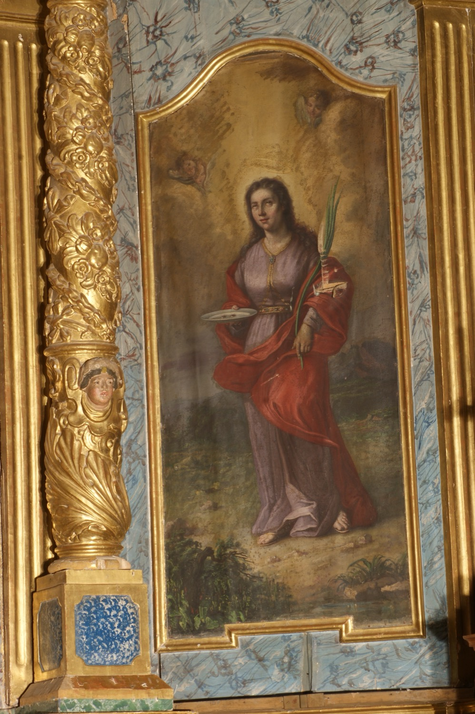

Santa Llúcia (s. III) va ser una jove màrtir cristiana. Era filla d’una família noble i cristiana de Siracusa. Durant l’adolescència decidí consagrar la seva vida a Déu fent vot de virginitat. Sense conèixer aquesta decisió, sa mare, que era vídua i estava malalta, la prometé en matrimoni a un jove pagà. Més endavant, mare i filla peregrinaren a la tomba de santa Àgata per demanar la curació de la malaltia de sa mare i aquesta es curà miraculosament. Llavors, Llúcia ho aprofità per convèncer-la perquè cancel·làs el compromís matrimonial i repartís el dot entre els pobres. El pretendent, enrabiat, la denuncià com a cristiana. Llúcia fou empresonada i sotmesa a diverses tortures perquè adoràs els déus pagans, però es mantengué fidel a la seva fe i finalment fou martiritzada.
En aquesta imatge, santa Llúcia sosté amb una mà una palma, que la identifica com a màrtir, i amb l’altra una palangana amb dos ulls, el seu atribut més característic. L’origen d’aquest símbol no és clar. Segons una tradició medieval, santa Llúcia es va arrabassar els ulls i els envià al seu pretendent perquè deixàs d’assetjar-la, i la Verge Maria n’hi concedí uns de més bells. Tanmateix, des del segle XVI aquesta història es considera fruit d’una confusió amb una altra santa Llúcia, una monja dominica a qui s’atribuïa un episodi semblant. Una altra llegenda conta que, com a part de les tortures que patí, li arrabassaren els ulls i que els recuperà miraculosament, però les primeres narracions del seu martiri no esmenten aquest fet.